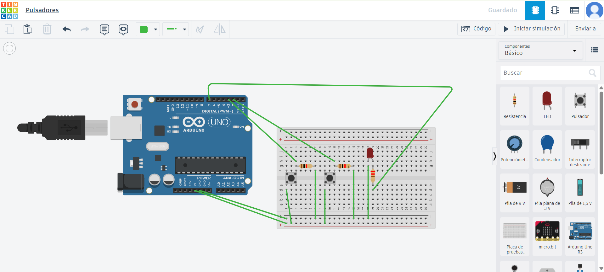

Instrucciones:
🧠 Observa y aprende:
Mira con atención esta imagen. Ahí verás:
- Un LED (lucecita) a la derecha del protoboard.
- Dos botones: uno para encender y otro para apagar el LED.
- Resistencias que protegen los componentes.
- Cables conectados desde el Arduino a los botones y al LED.

Identifica los siguientes componentes:
- El LED ubicado en la parte derecha de la protoboard.
- Dos pulsadores, uno para encender y otro para apagar el LED.
- Las resistencias conectadas en serie para proteger los componentes.
- Los cables verdes que van desde los pines digitales del Arduino hacia los pulsadores y el LED.
Comprende la lógica del circuito:
- El pulsador izquierdo está conectado al pin digital 2, y el derecho al pin 3.
- El LED se encuentra conectado al pin digital 4.
- Al presionar el pulsador del pin 2, el LED se enciende.
- Al presionar el pulsador del pin 3, el LED se apaga.
⚙️ Código utilizado
int led=7;
int encender=2;
int apagar=3;
int r1;
int r2;
void setup()
{
pinMode(led,OUTPUT);
pinMode(encender,INPUT);
pinMode(apagar,INPUT);
}
void loop()
{
r1=digitalRead(encender);//r1 almacena la señal recibida por el pulsador llamado encender
r2=digitalRead(apagar);
if(r1==HIGH)//¿Está actividado encender?
{
digitalWrite(led,HIGH);//Enciende el led
}
if(r2==HIGH)//¿Está actividado apagar?
{
digitalWrite(led,LOW);
}
}
Ahora que has identificado los componentes y comprendido la lógica del circuito…
🎯 ¡Es momento de ponerlo en práctica en la siguiente actividad!